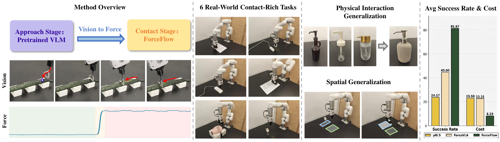
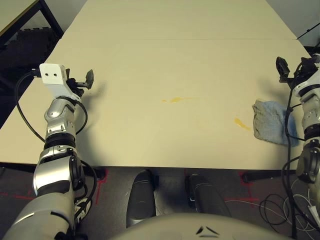
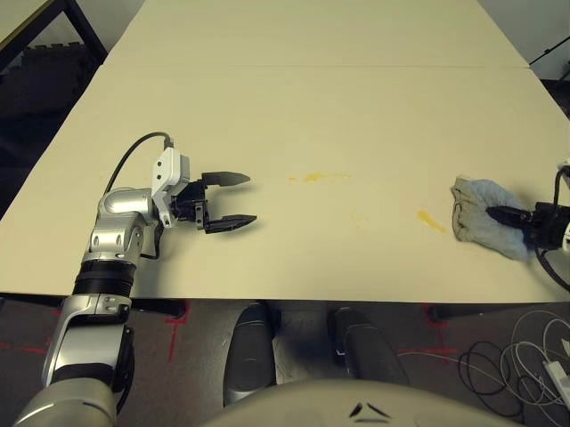
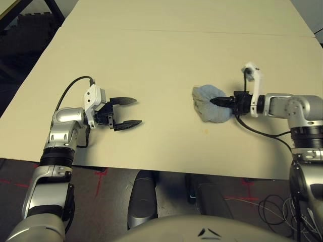

桌面 / 台面擦拭清洁
数据采集方案调研
接触丰富操作 · 多模态采集 · 公开数据集 · 行业方案对比
报告日期：2026 年 7 月 9 日
LeRobot
VR 仿真扩展
力 / 力矩 F/T
dirty_fraction
多视角 RGB
1. 任务特点与采集难点
擦拭属于接触丰富（contact-rich）操作，相比抓取 / 放置，对力控、覆盖率和效果评估有更高要求。
力控
覆盖
双臂协作
效果评估
多模态同步
物体状态
2. 采集流程总览
flowchart TB
subgraph Input["输入层"]
OP[操作员] --> TO[遥操作设备]
end
subgraph Teleop["遥操作方式"]
TO --> ALOHA[主从臂 ALOHA]
TO --> VR[VR / AVP]
TO --> SM[SpaceMouse]
TO --> EXO[外骨骼]
end
subgraph Robot["执行层"]
ALOHA & VR & SM & EXO --> ARM[机械臂 / 人形机器人]
end
subgraph Sensors["同步采集"]
ARM --> CAM[多路相机 30FPS]
ARM --> STATE[关节 / 末端状态]
ARM --> FT[腕部 F/T 可选]
end
subgraph Storage["数据存储"]
CAM & STATE --> LR[LeRobot 格式]
FT --> LR
FT --> ZARR[ForceFlow Zarr]
VR --> SIM[Exylos 仿真扩展] --> LR
end
subgraph QA["标注与质检"]
LR --> PHASE[阶段标注]
LR --> METRIC[清洁度指标]
LR --> LABEL[成功 / 失败标签]
end
3. 五种采集方案对比
| 方案 | 代表项目 | 成本 | 力数据 | 规模化 | Sim2Real |
|---|---|---|---|---|---|
| 真机遥操作 | LeRobot, DROID, Unitree G1 | 高 | 可选 | 中 | 无 gap |
| VR + 仿真扩展 | Exylos | 低 | 无 | 高 | 需微调 |
| 力控专项采集 | ForceFlow | 中 | 核心 | 中 | 无 gap |
| 商业数据服务 | Claru | 很高 | 100Hz | 很高 | 无 gap |
| 大规模通用数据集 | RoboCOIN, Bridge, AgiBot | — | 部分含 | 很高 | 视平台 |
ForceFlow：擦拭任务为何需要力数据

关键结论（Adaptive Wiping, 2025）：引入实时 F/T 反馈后，平均参考力跟踪准确率由 4% 提升至 96%。
4. LeRobot 录制数据流
LeRobot 是当前机器人模仿学习领域常用的开源采集框架，典型录制流程如下。
sequenceDiagram
participant T as 遥操作员
participant Tel as 遥操作设备
participant R as 从动机械臂
participant D as 数据集
loop 每帧约 30Hz
R->>R: 读取观测（图像、关节等）
T->>Tel: 操作输入
Tel->>R: 发送动作指令
R->>D: 同步写入状态、动作与时间戳
R->>D: 编码并存储视频帧
end
- 支持主从臂、VR、键盘等多种遥操作方式
- 数据以 Parquet（状态 / 动作）+ MP4（多路视频）格式存储
- 可与 Hugging Face Hub 对接，便于共享与训练
5. 公开数据集样例
以下为两个代表性数据集的 Episode 样例，展示典型擦拭任务的视觉观测与操作过程。
Exylos · 双臂海绵清理台面溢洒（俯视视角）
公开数据集
50 episodes · VR 采集
1280×960 · 30 FPS
Episode 0 · 俯视相机 · 任务：移除障碍物并用海绵擦拭液体 · 时长约 49 秒 · 清洁成功


Unitree G1 · 抹布擦拭桌面水渍
公开数据集
200 episodes · AVP 遥操作
640×480 · 30 FPS
Episode 0 · 左侧高位相机 · Unitree G1 双臂人形 · 时长约 12 秒



Exylos 任务阶段划分
stateDiagram-v2
[*] --> approach
approach --> grasp
grasp --> transport
transport --> clean_surface
clean_surface --> clean_swipe_pass
clean_swipe_pass --> clean_surface
clean_surface --> retract: dirty_fraction ≤ 0.01
retract --> [*]
clean_surface --> collision
collision --> clean_surface
6. 清洁度指标示例
Exylos 数据集提供 liquid_spill.dirty_fraction 字段（1.0 = 100% 污渍残留，0.01 为常用成功阈值）。下图为 Episode 0 的清洁进度曲线。
Exylos Table Spill Cleanup · Episode 0 · 共 1475 帧 · 终端 dirty_fraction = 0.0003（清洁成功）
起始状态
完成状态
7. 公开数据集清单
开放访问
需 Hugging Face 授权（Gated）
RoboCOIN R1 Lite wipe table
需申请RoboCOIN Cobot Magic clear desktop
需申请RoboCOIN RMC-AIDA-L clean table
需申请RoboCOIN 系列申请入口：huggingface.co/RoboCOIN
8. 各数据集采集方式
flowchart LR
subgraph Exylos["Exylos"]
E1[VR 人机演示] --> E2[Retarget 至 Panda]
E2 --> E3[程序化场景扩展]
E3 --> E4[LeRobot + 标注]
end
subgraph Unitree["Unitree G1"]
U1[Apple Vision Pro] --> U2[遥操作中间件]
U2 --> U3[G1 双臂执行]
U3 --> U4[30Hz 录制]
end
subgraph ForceFlow["ForceFlow"]
F1[SpaceMouse] --> F2[xArm6 + F/T]
F2 --> F3[Zarr 存储]
end
| 数据集 | 采集设备 | 频率 | 相机 | 特色字段 |
|---|---|---|---|---|
| Exylos | VR 头显 | 30 Hz | 7× RGB | dirty_fraction, mask, phase |
| Unitree G1 | AVP VR | 30 Hz | 腕 + 头 4 路 | 双臂 7-DoF + 末端位姿 |
| ForceFlow | SpaceMouse | 与视觉同步 | RealSense ×2 | force, delta_force |
| RoboCOIN | 多平台遥操作 | 30–50 Hz | 多视角 | 原子动作 wipe 标签 |
| DROID | ALOHA 风格遥操作 | 10 Hz | 多视角 | 关节 + 笛卡尔位姿 |
9. 推荐自建采集方案
flowchart TB
L1["Layer 1 · 预训练数据
Exylos / RoboCOIN 等公开集"] L2["Layer 2 · 真机采集
50–200 episodes"] L3["Layer 3 · 评估标注
清洁度 / 覆盖率指标"] L1 -->|迁移 / 微调| L2 --> L3
Exylos / RoboCOIN 等公开集"] L2["Layer 2 · 真机采集
50–200 episodes"] L3["Layer 3 · 评估标注
清洁度 / 覆盖率指标"] L1 -->|迁移 / 微调| L2 --> L3
最低可行配置
- 单臂 + 2 路相机（腕部 + 固定）
- 约 50 episodes，每条约 30 秒
- 固定模板污渍，便于定量评估
研究级配置
- 双臂 Franka / ALOHA + 腕部 F/T
- 100 Hz 力数据与 30 Hz 视觉对齐
- 俯拍 before/after + 程序化污渍生成
10. 数据格式对照
| 格式 | 状态 / 动作 | 视频 | 力 / 深度 | 常用工具 |
|---|---|---|---|---|
| LeRobot v2 / v3 | Parquet | MP4 | 可扩展字段 | LeRobot 库 |
| ForceFlow Zarr | Zarr 数组 | 内嵌 JPEG | force, delta_force | 项目配套 loader |
| RLDS (DROID) | TFRecord | 内嵌 | 部分含 | TensorFlow Datasets |
| Exylos 扩展 | Parquet + object_poses | MP4 + PNG mask | dirty_fraction | LeRobot + 自定义字段 |
11. 参考文献
- RoboCOIN: 大规模多本体双臂操作数据集 (2025)
- LeRobot: 端到端机器人学习开源库 (2026)
- Adaptive Wiping: 力反馈自适应擦拭 (2025)
- SCCRub: 软体机器人擦洗与力-挠度建模 (2025)
- Mobile ALOHA: 移动双臂操作 (2024)
更多资源：LeRobot 文档 · ForceFlow 项目页 · Exylos 官网 · Unitree AVP 遥操作文档